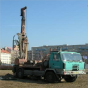

Kombinovaná vrtná souprava na podvozku
SGBO (TATRA-815)
Technologie vrtání
- Jádrové nárazové vrtání bez výplachu v profilech D 112–280 mm
- DTTO - s vodním / vzduchovým výplachem v profilech D 76–137 mm
- Bezjádrové vrtání ponorným příklepovým kladivem se vzduchovým výplachem v profilech D 165–254 mm
Technické parametry – základní
- Max. průměr pažení: 324 mm
- Max. hloubka jádrového vrtu: 50 m
- Max. hloubka bezjádrového vrtu: 150 m
- Přepravní rozměry: 7850 x 2620 x 3870 mm
- Hmotnost: 17 t
- Výška věže: 9,3 m
Další technické parametry
- Otáčky vřetene: 35–60–190–350 ot/min
- Přítlak vrták: 6000 kp (tj. 58,8 kN)
- Tah na vřetenu: 9200 kp (tj. 90,2 kN)
- Krouticí moment: 9000 Nm
- Délka lana: 80 m
- Pažicí stůl: průměr 324 mm
- Otáčky stolu: 12 ot/min
- Přítlak stolu: 12 000 kp (tj. 117,7 kN)
- Tah stolu: 18 000 kp (tj. 16,5 kN)
- Kompresor: 4,3 m³/min při 1,2 MPa
- Výplachové čerpadlo: 117 l/min při 1,2 MPa
- Pohon: motor DEUTZ F6L912
- Nosnost věže: 2 t
- Rok výroby: 1994
Vrtná souprava může provádět vrtné práce i bez pažicího stolu.